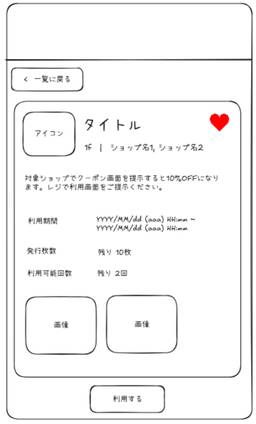

リゾームのテックブログ
https://tech.rhizome-e.com/
リゾームのテックブログ
フィード

フロントエンドエンジニアがペーパープロトタイピングを通じて得た気づき
リゾームのテックブログ
株式会社リゾーム 業務ソリューション事業グループの水谷です。BOND WORKSのフロントエンドエンジニアです。 今回は、私の所属する開発チームで取り組んだペーパープロトタイピングの内容と、そこで得られた気づきを紹介します。 背景 取り組み内容 ペーパープロトタイプの作成 チームでのレビュー 自分が意識したこと コンポーネント配置をできるだけ具体的に描く 操作フローを意識する 補足情報をメモとして残す 効果と気づき 仕様や機能全体への理解が深まった 実装後のレビューでの指摘や手戻りが減った おわりに 背景 これまでの開発では、主にテキストベースの仕様書をもとに画面を作成していました。 しかし、…
6日前

業務で読んだ本・役に立った本を紹介
リゾームのテックブログ
株式会社リゾーム 業務ソリューション事業グループの富田です。BONDWORKSのバックエンドエンジニアを担当しています。 2025年に入社してからこれまでに、業務で読んだ本や業務の役に立った本をご紹介します。 入社以前に読んだ本 イメージ&クレバー方式でよくわかる かやのき先生のITパスポート教室 キタミ式イラストIT塾 基本情報技術者 入社1年目に読んだ本 プロを目指す人のためのRuby入門 最新SC業界の動向とカラクリがよ～くわかる本 世界の一流は「雑談」で何を話しているのか 心理的安全性のつくりかた いちばんやさしいGit&GitHubの教本 1冊ですべて身につくHTML & CSSとW…
9日前
Railsのファイルキャッシュ起因で遅延が起きた話
リゾームのテックブログ
株式会社リゾーム 業務ソリューション事業部 企画開発課の梶谷です。 商業施設・専門店向けのコミュニケーションウェア BOND GATE（ボンドゲート）の運用、保守を担当しています。 本番環境で「画面操作時に表示が遅いことがある」という状況があり、原因切り分けのためにNew Relic（APM）を使って調査していたところ特定操作時のレスポンス遅延が発生していることに気付きました。 調査の結果、原因はアクション本体の処理ではなく、同一リクエスト内で実行されていたキャッシュ削除処理に時間がかかっていることが分かりました。 今回は発生していた事象、調査結果、対応内容と対応結果をご紹介します。 同様の事…
14日前
BOND GATEからBOND WORKSへの移行を支えるAWSインフラ改修
リゾームのテックブログ
株式会社リゾーム 業務ソリューション事業グループのあめぎです。 2025年にBOND WORKSがリリースされもう1年以上経過しました。 有り難いことに、前身となるBOND GATEからBOND WORKSへ乗り換えてくださるお客様がどんどん増えている状況です。 しかし、そうなってくると問題となるのはデータ移行です。 既存のBOND GATEの情報を、BOND WORKSへ移行し過去の情報資産をそのままご活用いただけないといけません。 リゾームでは、その対応のためにデータ移行作業を行うわけですが、リリース当初の手法では時間もかかり無駄が多い状況でした。 そのため、2つの視点からデータ移行作業の…
16日前
【BOND WORKS】Next.js14から15への移行対応
リゾームのテックブログ
株式会社リゾーム 業務ソリューション事業グループの土井です。 BOND WORKSでフロントエンドエンジニアを担当しています。 BOND WORKS | 製品・サービス情報 | 株式会社リゾーム 今回は以前行ったNext.js14から15への移行について紹介します。 対応の流れ アップグレード対応 codemod実行 各エラー発生箇所への対応 未反映箇所の修正対応 移行手順書の作成 実際に対応してみて おわりに 対応の流れ 大まかに以下のような流れで実施しました。 アップグレードの手順調査 ローカルでのアップグレード対応 公式で配布されているcodemodによる自動修正 自動修正で直らなかった…
1ヶ月前
BOND WORKSにおけるnpmサプライチェーン攻撃対策
リゾームのテックブログ
株式会社リゾーム 業務ソリューション事業グループの岡部です。BOND WORKSのフロントエンドエンジニアです。 BOND WORKS | 製品・サービス情報 | 株式会社リゾーム 今回は、昨今相次ぐnpmへのサプライチェーン攻撃に対し、BOND WORKSチームが実施している対策を紹介します。 はじめに：サプライチェーン攻撃とは 1. 悪意のあるパッケージを入れない 1-1. 悪意のあるパッケージを検出・ブロックする 1-2. 公開から一定期間経過していないパッケージをブロックする 2. npm install 実行時のスクリプトを防ぐ 3. CI/CD環境を守る おわりに はじめに：サプラ…
2ヶ月前
Next.jsでReact Iconsを使うと開発サーバー（next dev）が重いので対策を入れた
リゾームのテックブログ
株式会社リゾーム 業務ソリューション事業グループの岡部です。BOND WORKSのフロントエンドエンジニアをやっています。 BOND WORKS | 製品・サービス情報 | 株式会社リゾーム BOND WORKSのフロントエンドはNext.jsで開発しており、アイコンライブラリとしてReact Icons（react-icons）を採用しています。 React IconsにはFont Awesome、Material Design Icons、Bootstrap Iconsなどをはじめとするメジャーなアイコンパックが多く含まれているため、個々のアイコンライブラリを別々にインストールする必要があ…
6ヶ月前
HanamiとRLSを活用したマルチテナントデータ管理
リゾームのテックブログ
株式会社リゾーム 業務ソリューション事業グループの藤岡です。 弊社ではショッピングセンター向けの製品を自社開発しており、私は BOND WORKS という製品の開発に携わっています。 この製品はマルチテナントアプリケーションであり、テナントごとにデータを分離する必要があります。 今回は、このマルチテナントデータを安全に扱うために、どのような方法を採用したのかをご紹介します。 開発情報 フレームワーク: Hanami2.3 (Ruby) ORM: ROM-rb(rom-sql, Sequel) データベース: PostgreSQL マルチテナントデータを扱う方法 マルチテナントのデータを扱う際に…
7ヶ月前
新人がモブレビューに参加して感じたメリット
リゾームのテックブログ
株式会社リゾーム 業務ソリューション事業グループの水谷です。 私は BOND WORKS という製品のフロントエンド開発を担当しています。 私の所属する開発チームでは、コードレビューの一環として「モブレビュー」を取り入れています。 新人エンジニアである私は、チーム参加後からこのモブレビューに参加しており、気づけば約1年が経ちました。 今回は、私のチームでどのようにモブレビューを行っているのかを簡単に紹介しつつ、参加し始めた当時を振り返りながら、新人の立場でどのようなメリットを感じていたのかをまとめます。 本記事が、弊社に興味を持っている方にとって、現場の開発の雰囲気を知る一例になれば幸いです。…
7ヶ月前
リゾームの開発OJTでの学びと成長ポイント
リゾームのテックブログ
株式会社リゾーム 業務ソリューション事業部 企画開発課の梶谷です。 今年入社し、5月から12月頭まで開発OJTに参加しましたので、今回はその具体的な内容をご紹介します。 私はIT系の専門学校を卒業してはいるものの、コードを自力で書いた経験はあまりなく実務スキルがほとんどない状態でOJTをスタートしました。 ほぼ未経験で弊社の開発OJTに参加して成長したことや、特にありがたかった点もお伝えしますので、就職活動中の方や開発系のOJTに関わる方の参考になれば幸いです。 開発OJT概要 通期で取り組んだこと 昼会 OJTフィードバック 日報の記入 メンター面談 期間を区切って取り組んだこと ZENSt…
9ヶ月前
新卒エンジニアがリモートワークをやるうえで気づいた工夫
リゾームのテックブログ
株式会社リゾーム 業務ソリューション事業グループの富田です。 今回は、2025年4月入社の私がリモートワークをやる上で気づいた社内での工夫、やって良かったことを紹介します。リモートワーク勤務に興味のある方や、弊社に興味を持っていただいた方の参考になればと思います。 リモートワークで気づいた工夫 コミュニケーションの工夫 自己管理の難しさと日報の役割 孤独感を感じたときに助かること チームメンバーのサポート リモートワークでやって良かったこと 積極的な自己開示 適度に休憩をとる 快適な作業環境づくり 終業後の運動習慣 終わりに リモートワークで気づいた工夫 私がリモートワークで気づいた、社内で行…
9ヶ月前
サポート役としての新人育成体験
リゾームのテックブログ
株式会社リゾーム 業務ソリューション事業グループの土井です。 今回は、2024年度に新人が同じ部署に配属された際、OJTトレーナーではなくサポート役として関わった経験をご紹介します。 新たにOJTに関わる可能性が出てきた方や就職活動中に弊社に興味を持っていただいた方の参考になればと思います。 新入社員研修の概要 新入社員研修(4月) 開発部門の研修(5月～10月) 実務(10月～) OJTの概要 出社でのフォロー 昼会 週次のふりかえりMTG モブプログラミング 実施してよかったと思うこと 先輩の負担を減らす 書記的な役割 反省点 実際の評価 OJTトレーナーの先輩から 新人から おわりに 新…
9ヶ月前
ActiveJobの優先度制御にNice値を使用する
リゾームのテックブログ
株式会社リゾーム 業務ソリューション事業グループの原です。 弊社ではショッピングセンター向けの製品の自社開発を行っており、私はBOND GATEという製品の開発に携わっています。 こちらはRuby on Railsで開発しており、その中の管理者用の機能の一つとして、ログの内容をCSVファイルにして出力する機能があります。 今回は、この機能を一部の環境で使用した際に、処理が重くなり動作しなくなる……という事象が発生しました。 そのときの対応・検証についてまとめたので、似たような問題が起きた際の解決策となると思い、記事にしています。 経緯 ログ内容のCSVファイルを出力するActiveJobを実行…
9ヶ月前
AWS WAF統合でコスト削減 マネージドルール料金を最適化した方法
リゾームのテックブログ
株式会社リゾーム 業務ソリューション事業グループのあめぎです。 定期的にAWS費用の内訳と睨めっこして、「どこか削減できるんじゃないか？」と考えてしまうところがあるのですが、今回はそれが実を結んだ。というお話です。 結果として、毎年パソコンが何台も買える経費削減につながりました。 もしALBとWAFをお客様ごとに用意して、マネージドルールを使用しているなら、同様の経費削減ができるかもしれません。 WAFのマネージドルールに着目した経緯 利用しているマネージドルールの料金体系をよく見ると、月額サブスクリプションが環境ごとにかかる事に着目しました。そこで「できるならWAFをまとめてしまおう」という…
9ヶ月前
「スッキリわかるSQL入門」読書会レポート vol.12
リゾームのテックブログ
株式会社リゾーム 技術部 システム開発 第1グループの小田です。今回は「スッキリわかるSQL入門」読書会の第12回レポートです。 過去のレポートはこちらからご覧いただけます。 tech.rhizome-e.com 書籍について 前回に引き続き「スッキリわかるSQL入門 第3版」を題材としています。 第12回レポート 今回は第12章「テーブルの設計」の後半部分（5～7節）のレポートになります。 前回は正規化の概要について触れましたが、今回は正規化の具体的な手順やテーブルの物理設計について学習しました。 参加者は5名でした。 12.5 正規化の手順 正規化によってテーブルが適切に分割された状態を正…
3年前
「スッキリわかるSQL入門」読書会レポート vol.11
リゾームのテックブログ
株式会社リゾーム 技術部 システム開発 第1グループの岩﨑です。今回は「スッキリわかるSQL入門」読書会の第11回レポートです。 過去のレポートはこちらからご覧いただけます。 tech.rhizome-e.com 書籍について 前回に引き続き「スッキリわかるSQL入門 第3版」を題材としています。 第11回レポート 第12章「テーブルの設計」の前半部分（1～4節）のレポートになります。前回まで様々なSQLの文法やDBMSの機能について学んできましたが、今回は少し異なり「概念設計」「論理設計」などのテーブル設計の手順について学習しました。 参加者は4名でした。 12.1 システムとデータベース …
3年前
「スッキリわかるSQL入門」読書会レポート vol. 10
リゾームのテックブログ
株式会社リゾーム 技術部 システム開発 第3グループの岡部です。今回は「スッキリわかるSQL入門」読書会の第10回のレポートです。 過去のレポートはこちらからご覧いただけます。 tech.rhizome-e.com 書籍について 使用した書籍は「スッキリわかるSQL入門 第3版 - IT入門書籍 スッキリシリーズ」です。 スッキリわかるSQL入門 第3版 ドリル256問付き！ スッキリわかるシリーズ作者:中山清喬,飯田理恵子インプレスAmazon 第10回レポート 今回の学習範囲は第11章「さまざまな支援機能」です。データベースを「より速く」「より便利に」「より安全に」使うための機能を学びまし…
3年前
「スッキリわかるSQL入門」読書会レポート vol.9
リゾームのテックブログ
株式会社リゾーム 技術部 システム開発 第1グループの宮野です。 「スッキリわかるSQL入門」読書会の第9回レポートです。 「スッキリわかるSQL入門」の過去のレポートや、他の読書会のレポートはカテゴリ「読書会」でご覧いただけます。 tech.rhizome-e.com 読書会の題材 前回に引き続き「スッキリわかるSQL入門」を題材としています。 9回目レポート 9回目は第10章「テーブルの作成」のレポートになります。参加者は4名でした。 それぞれの感想・意見交換 10.1 SQL命令の種類 10.1.1 データベースを使う2つの立場 DBMSに対して、①データの操作を指示する立場 と、②デー…
3年前
「スッキリわかるSQL入門」読書会レポート vol.8
リゾームのテックブログ
株式会社リゾーム 技術部 システム開発 第3グループの土井です。 「スッキリわかるSQL入門」読書会の第8回レポートです。 「スッキリわかるSQL入門」の過去のレポートや他の読書会のレポートはこちらからご覧いただけます。 tech.rhizome-e.com 読書会の題材 前回までに引き続き「スッキリわかるSQL入門」を題材としています。 8回目レポート 8回目は第9章「トランザクション」のレポートになります。参加者は5名でした。 それぞれの感想・意見交換 正確なデータ操作 データの取り扱いについては製品を提供する側として特に重要なところ 製品提供の前提条件として正常なデータ操作ができるという…
3年前
「スッキリわかるSQL入門」読書会レポート vol.7
リゾームのテックブログ
株式会社リゾーム 技術部 システム開発 第4グループの平松です。今回は「スッキリわかるSQL入門」読書会の第7回のレポートです。 「スッキリわかるSQL入門」の過去のレポートや他の読書会のレポートはカテゴリーでまとめていますので、こちらからご覧いただけます。 tech.rhizome-e.com 読書会の題材 前回に引き続き「スッキリわかるSQL入門」を題材としています。 7回目レポート 7回目は第8章「複数テーブルの結合」のレポートになります。参加者は4名でした。 それぞれの感想・意見交換 「リレーショナル」の意味 基本情報の勉強でやったところ テスターは自分でテーブルを設計する機会はないが…
3年前
「スッキリわかるSQL入門」読書会レポート vol.6
リゾームのテックブログ
株式会社リゾーム 技術部 システム開発 第1グループの小田です。 今回は「スッキリわかるSQL入門」読書会の第6回のレポートです。 過去のレポートはこちらからご覧いただけます。 「スッキリわかるSQL入門」読書会レポート vol.1 - リゾームのテックブログ 「スッキリわかるSQL入門」読書会レポート vol.2 - リゾームのテックブログ 「スッキリわかるSQL入門」読書会レポート vol. 3 - リゾームのテックブログ 「スッキリわかるSQL入門」読書会レポート vol. 4 - リゾームのテックブログ 「スッキリわかるSQL入門」読書会レポート vol.5 - リゾームのテックブログ…
3年前
「スッキリわかるSQL入門」読書会レポート vol.5
リゾームのテックブログ
株式会社リゾーム 技術部 システム開発 第1グループの岩﨑です。今回は「スッキリわかるSQL入門」読書会の第5回のレポートです。 過去のレポートはこちらからご覧いただけます。 「スッキリわかるSQL入門」読書会レポート vol.1 - リゾームのテックブログ 「スッキリわかるSQL入門」読書会レポート vol.2 - リゾームのテックブログ 「スッキリわかるSQL入門」読書会レポート vol. 3 - リゾームのテックブログ 「スッキリわかるSQL入門」読書会レポート vol. 4 - リゾームのテックブログ 読書会の題材 前回に引き続き「スッキリわかるSQL入門」を題材としています。 5回目…
3年前
「スッキリわかるSQL入門」読書会レポート vol. 4
リゾームのテックブログ
株式会社リゾーム 技術部 システム開発 第1グループの宮野です。 「スッキリわかるSQL入門」読書会 第4回のレポートです。 過去の記事はこちらです 「スッキリわかるSQL入門」読書会レポート vol.1 - リゾームのテックブログ 「スッキリわかるSQL入門」読書会レポート vol.2 - リゾームのテックブログ 「スッキリわかるSQL入門」読書会レポート vol. 3 - リゾームのテックブログ 今回の題材 引き続き、「スッキリわかるSQL入門」を使用しています。 今回から第Ⅱ部「SQLを使いこなそう」に入りました。 第5章「式と関数」を参加者で読み、感想などを話し合いました。 参加人数 …
3年前
「スッキリわかるSQL入門」読書会レポート vol. 3
リゾームのテックブログ
株式会社リゾーム 技術部 システム開発 第3グループの岡部です。今回は「スッキリわかるSQL入門」読書会の第3回のレポートです。 過去のレポートはこちらからご覧いただけます。 「スッキリわかるSQL入門」読書会レポート vol.1 - リゾームのテックブログ 「スッキリわかるSQL入門」読書会レポート vol.2 - リゾームのテックブログ 書籍について 使用した書籍は「スッキリわかるSQL入門」です。 スッキリわかるSQL入門 第3版 - IT入門書籍 スッキリシリーズ (sukkiri.jp) スッキリわかるSQL入門 第3版 ドリル256問付き！ スッキリわかるシリーズ作者:中山清喬,飯…
3年前
「スッキリわかるSQL入門」読書会レポート vol.2
リゾームのテックブログ
株式会社リゾーム 技術部 システム開発 第3グループの土井です。 「スッキリわかるSQL入門」読書会の第2回レポートです。第1回目のレポートはこちらです。 tech.rhizome-e.com 読書会の題材 前回に引き続きスッキリわかるSQL入門を題材としています。 2回目レポート 2回目は第2章「基本文法と4大命令」と第3章「操作する行の絞り込み」のレポートになります。参加者は6名でした。 それぞれの感想・意見交換 基本文法と４大命令 SQLの基本ルール SELECT, FROM, WHEREで行を分けて書いている 予約語は大文字で書いている 自分の中での予約語のルールとしては、予約語ではな…
3年前
「スッキリわかるSQL入門」読書会レポート vol.1
リゾームのテックブログ
株式会社リゾーム 技術部 システム開発 第4グループの平松です。 「Linux標準教科書」読書会が終わり少し間が空きましたが今回も社内で有志を募り読書会を始めました。 その内容をレポートにしていきたいと思います。 読書会の題材 題材として選んだのは、スッキリわかるSQL入門 第3版 ドリル256問付き！ スッキリわかるシリーズです。 スッキリわかるSQL入門 第3版 ドリル256問付き！ スッキリわかるシリーズ作者:中山清喬,飯田理恵子インプレスAmazon SQLの基礎からDB設計までを体系的に学べることができるかと思い、この本を選びました。 読書会の進め方 読書会の進め方はリゾームのテック…
3年前
「Linux標準教科書」読書会レポート vol.11
リゾームのテックブログ
株式会社リゾーム 技術部 システム開発 第2グループの土井です。 「Linux標準教科書」読書会の第11回レポートです。第10回目のレポートはこちらです。 tech.rhizome-e.com 読書会の題材 前回に引き続きLinux標準教科書を題材としています。 11回目レポート 今回は「第12章 ファイル管理」で、参加者は6人でした。 それぞれの意見交換 Linux のファイル管理 ルートディレクトリ直下の各ディレクトリがそれぞれ何用のディレクトリなのか曖昧なまま使っていた 業務でよく使うディレクトリはhome, 設定の変更のetcとログ調査目的のvar 昔のサーバはetcではなく、optに…
4年前
「Linux標準教科書」読書会レポート vol.10
リゾームのテックブログ
株式会社リゾーム 技術部 システム開発 第4グループの平松です。「Linux標準教科書」読書会の第10回レポートです。第9回目のレポートはこちらになります。 tech.rhizome-e.com 読書会の題材 前回に引き続き Linux標準教科書を題材としています。 10回目レポート 今回は11章「プロセス管理」で、参加者は4名でした。 それぞれの感想・意見交換 プロセスとは プロセスはkillコマンドで終了させるときに確認するぐらいでプロセスの親子関係や流れを意識したことはなかった スケジューリング ラウンドロビン、FIFOはよく出て来るので覚えておくといいかも プロセスの優先度のパラメータ…
4年前
「Linux標準教科書」読書会レポート vol.9
リゾームのテックブログ
株式会社リゾーム 技術部 システム開発 第1グループの岩﨑です。「Linux標準教科書」読書会の第9回レポートです。第8回目のレポートはこちらになります。 tech.rhizome-e.com 読書会の題材 前回に引き続きLinux標準教科書を題材としています。 9回目レポート 今回は「第10章 ネットワークの設定と管理」で、参加者は5名でした。 それぞれの感想・意見交換 TCP/IPとは いつも説明できなくて再度定義を確認した プロトコルの話なので、そういう仕組みがあるというだけの話 IPは通信先の指定とパケットを送る仕組み pingコマンドでサーバーと通信できているか確認する pingコマ…
4年前
「Linux標準教科書」読書会レポート vol.8
リゾームのテックブログ
株式会社リゾーム 技術部 システム開発 第2グループの土井です。 「Linux標準教科書」読書会の第8回レポートです。第7回目のレポートはこちらです。 tech.rhizome-e.com 読書会の題材 前回に引き続きLinux標準教科書を題材としています。 8回目レポート 今回は「第9章 シェルスクリプト」で、参加者は5人でした。 それぞれの感想・意見交換 シェルとシェルスクリプト シェルスクリプトはほぼ書いたことがない カーネルを包み込んでいるからシェルという名が付いている、なるほど これが噂に聞くシェルスクリプトかと思った Windowsのバッチと似ていたため内容の理解はスムーズにできた…
4年前